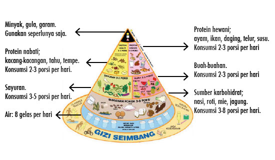

Gizi seimbang adalah susunan makanan sehari-hari yang mengandung zat gizi dalam jenis dan jumlah yang sesuai dengan kebutuhan tubuh, dengan memerhatikan prinsip keanekaragaman atau variasi makanan, aktivitas fisik, kebersihan, dan berat badan (BB) ideal. Jika seseorang mengalami kekurangan gizi, yang terjadi akibat asupan gizi di bawah kebutuhan, maka ia akan lebih rentan terkena penyakit dan kurang produktif. Sebaliknya, jika memiliki kelebihan gizi akibat asupan gizi yang melebihi kebutuhan, serta pola makan yang padat energi (kalori) maka ia akan beresiko terkena berbagai penyakit seperti diabetes, tekanan darah tinggi, penyakit jantung dsb. Karena itu, pedoman gizi seimbang disusun berdasarkan kebutuhan yang berbeda pada setiap golongan usia, status kesehatan dan aktivitas fisik. Untuk membantu setiap orang memilih makanan dengan jenis dan jumlah yang tepat, kebutuhan asupan gizi divisualisasikan dalam bentuk Tumpeng Gizi Seimbang (TGS), yang terdiri atas potongan-potongan tumpeng. Luasnya potongan menunjukkan porsi yang harus dikonsumsi setiap hari. TGS dialasi air putih, artinya air putih merupakan bagian terbesar dari zat gizi esensial bagi kehidupan untuk hidup sehat dan aktif. 